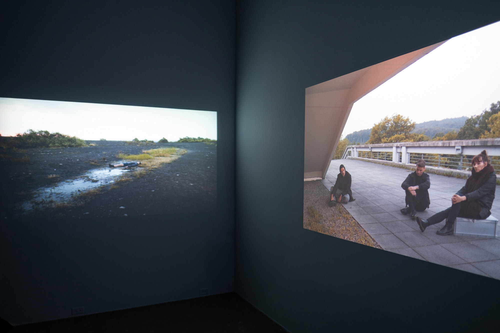
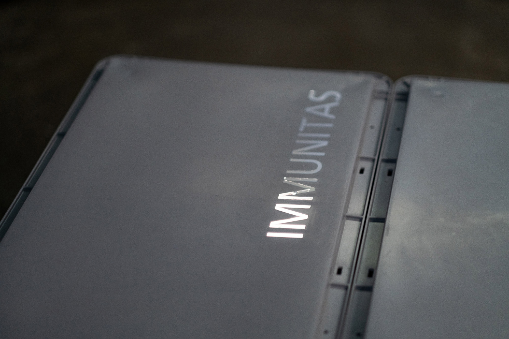
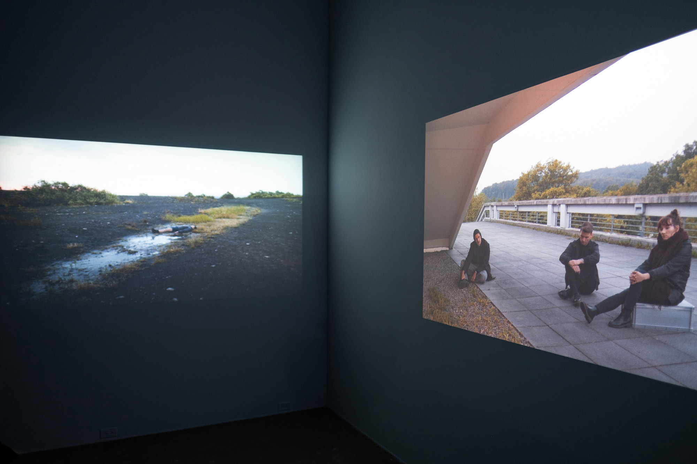
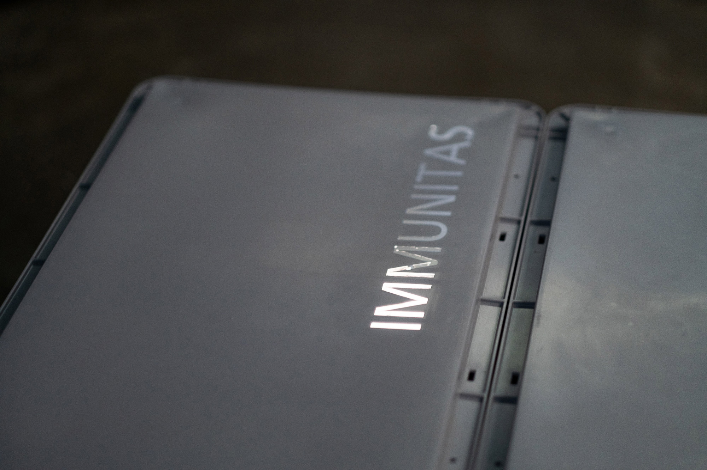

Jessica Arseneau

Dawns, 2021-2024
Video 2K, sound stereo
25:40 min.
Dawns takes us to a time when sleep is disrupted and insomnia becomes a collective condition. Captured before sunrise, with non-actors in a variety of outdoor environments, the two-channel work consists of a continuous shot and long takes. The slow cinematographic images are reminiscent of tableau vivants where people, in groups or alone, find themselves in an urban environment or the transformed wasteland of a former industrial area. Exhaustion is conveyed by the bodies’ postures and their near immobility, composing at the same time an atmospheric landscape of fragility and endurance at the limit of the perceptible. The film ends at sunrise, when night ends and day begins.
Camera: Kathrin Grzeschniok
Sound: Magna Pia, Jessica Arseneau
Featuring: Ama Gyaako Kagya Agyemang, Ralf d'Atri, Henrik Beeke, Leonie Böhmer, Katharina Geling, Fabio Gorchs, Kathrin Grzeschniok, Lorenza Elisabeth Kaib, Aljoscha Lahner, Camilla Mücksch, Vanessa Nica Mueller, Scherin Rajakunaran, Hannah Stratmann, Philipp Daniel Unger, Anna Wehling
Special thanks: Danijel Brekalo, Alisha Raissa Danscher, Jan Ehlen, Einar Fehrholz, Vittoria Lenz, Thomas Szabo, Makroscope Mülheim
This project was created as part of the "Zu Gast bei Urbane Künste Ruhr zu Gast bei der Silent University Ruhr" residency program, a collaboration between Urbane Künste Ruhr and Ringlokschuppen Ruhr.


 

Photos: Vincent Drouin, Jessica Arseneau


Photos: Vincent Drouin, Jessica Arseneau
In the solo exhibition presented at L’Oeil de Poisson, Québec, Dawns was shown along a light installation, storage containers and two chosen words. The light installation slowly evolves into different shades of blue, moving from deeper to lighter hues over a 45-minute period. Installed in the Petite galerie enclave, it created a luminous niche extending into the exhibition space, illuminating the word “RÉMANENT.”
“Rémanent” refers to something enduring, persisting even after its original cause has faded. In French, the term for “afterimage” is “image rémanente.” Similarly, certain biological rhythms—such as biphasic sleep patterns, which began to disappear after the Industrial Revolution—remain “rémanent” in our physiology, evident when we wake up in the night and struggle to fall back asleep, or in the fragmented sleep cycles that persist due to night shifts and the demands of a 24/7 society. “IMMUNITAS” evokes the forces at play within a nonstop economy, where processes of immunity can generate mechanisms of inequality.
Solo exhibition Surrounding Uncaring Skies, in which Dawns was installed in multi channels:


 Photos: Mathieu Léger, Jessica Arseneau
Photos: Mathieu Léger, Jessica Arseneau
Exhibition views, Galerie d'art Louise-et-Reuben-Cohen, Moncton


Video still frames
We acknowledge the support of the Canada Council for the Arts.